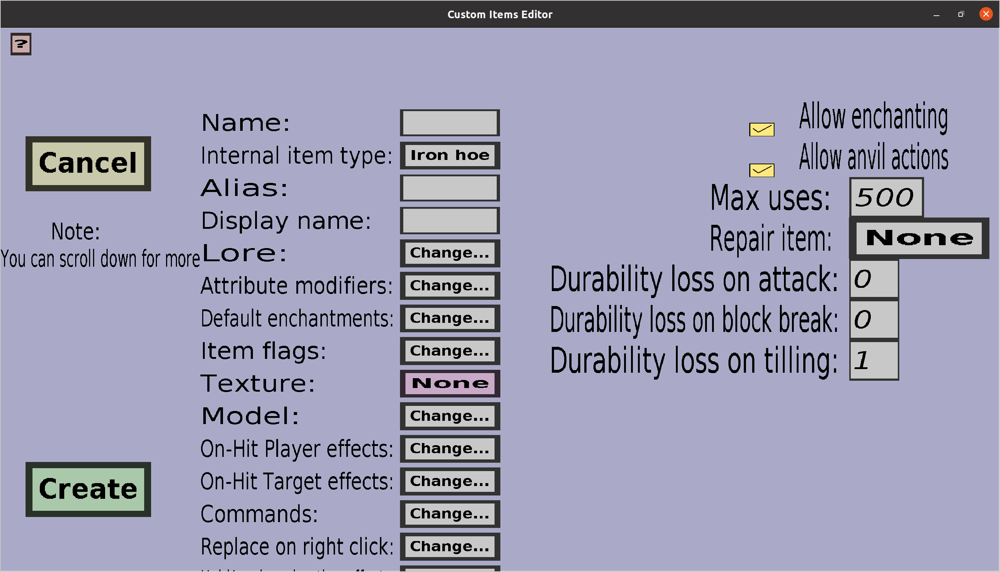

The hoe edit menu can be used to create or edit custom hoes. If you just started creating a new hoe, it should look like this:
This menu has everything the tool edit menu has, but an additional 'Durability loss on tilling', which determines how much durability the hoe will lose each time a player uses it to till dirt. See the section about the 'Max uses' and durability in the tool edit menu for more information about that.